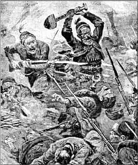

12. Savaştan bir an...
(Bir zamanlar bu gibi savaş resimleri dükkânların duvarlarını süslerdi. fiu heyecanlı sahneyi, Bursa Yenişehir'de, çocukluğumun berberinden, zihnime kazılmış olarak hatırlıyorum... Dini ve vatanı için, gerçek bir savaşta canını ve malını fedâ etmeye, zihnen ve rûhen hazır olmayan milletler, fikir ve kültür savaşını da yapamazlar...)